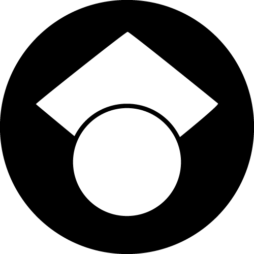

I'm a Ph.D. student in the Human-Computer Interaction Institute at Carnegie Mellon University, advised by Prof. David Lindlbauer in the Augmented Perception Lab. My research combines sensing technology and interaction design to develop digital input techniques that integrate fluidly with the physical world. I aim to give people convenient access to computing systems in their daily life, with minimal cost to their attention, privacy, and sense of presence.
I love to think rigorously about the impact of experience design decisions on users, and I extend this thinking to my hobbies: puzzlehunts (I write and solve with teammate), tabletop games, film, and theatre. I was previously a research engineer with Meta's Reality Labs Research, and I graduated from Carnegie Mellon University in 2020 with a Bachelor of Science in Computer Science and minors in Media Design and Film and Media Studies.
